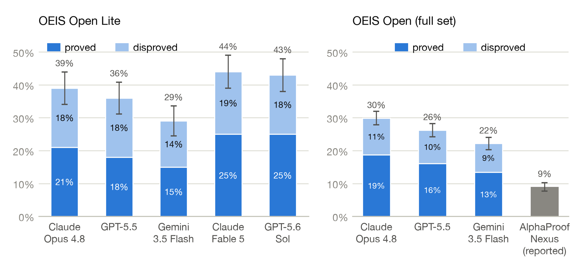
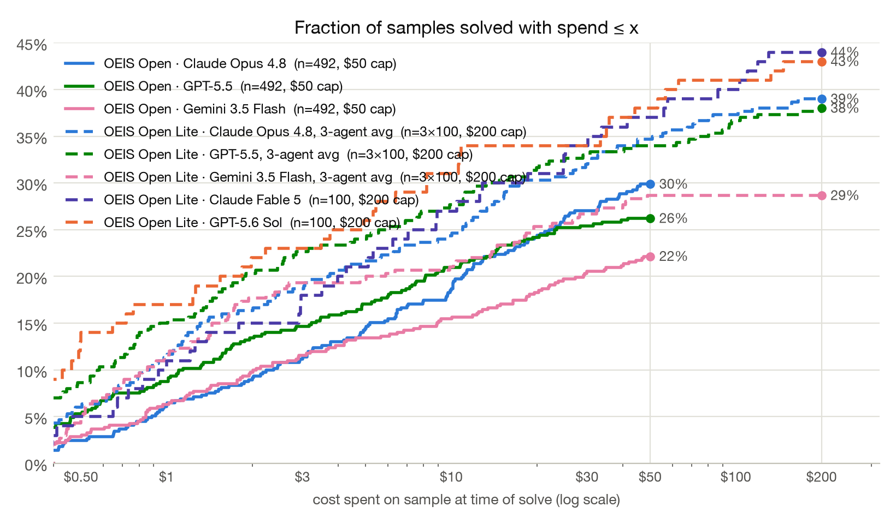

Introduces OEIS Open, a benchmark of 492 open OEIS conjectures formalized in Lean, and evaluates generic language models against them.
Abstract
We construct OEIS Open, a benchmark based on 492 open mathematical conjectures from the OEIS, formalized in Lean by Tsoukalas et al. Whereas these conjectures had previously been attempted only with a bespoke agent, our open-source evaluation code runs any generic language model (LM) against them, and is secure against LM cheating attempts. We find that LMs equipped with a minimal set of tools resolve 147 of these conjectures with a budget of \$50 per attempt, scoring 30% on OEIS Open. OEIS Open Lite is a random subset of 100 conjectures for cheaper evaluation. When evaluated with a budget of \$200 per attempt, the best current LM scores 44% on OEIS Open Lite. Giving LMs access to the mathematics literature via 476,000 papers from arXiv did not increase performance on OEIS Open Lite, and nor did using more sophisticated agent loops. The conjectures covered in this work are of uncertain mathematical significance, and most have likely received little previous attention. Nevertheless, our results show that LMs can resolve open research conjectures autonomously and at modest cost.
Problem
Recent AI systems have solved open mathematical problems, but their success rates, costs, and comparability across models are undisclosed. Existing open-problem benchmarks cannot cover most of research mathematics and require bespoke verifiers.
Approach
A benchmark called OEIS Open is constructed from 492 open conjectures about integer sequences, formalized in Lean by Tsoukalas et al. Open-source evaluation code runs any generic language model against these Lean statements, resolving a conjecture when a submitted proof of the statement or its negation passes verification. The setup is designed to be secure against model cheating, and a 100-conjecture subset (OEIS Open Lite) is provided for cheaper evaluation.
Results
With a $50 per-attempt budget on the full set, Claude Opus 4.8 resolved 30% of conjectures, outperforming the AlphaProof Nexus baseline (9%). On OEIS Open Lite with a $200 budget, the best model reached 44%. Access to arXiv literature and more sophisticated agent loops did not improve performance.

Figure 1: Accuracy on OEIS Open Lite with the base agent (left; 100 conjectures, $200 budget per conjecture) and on the full OEIS Open set, with the reported AlphaProof Nexus baseline (right; 492 conjectures, $50 budget). Each bar splits solves into proofs (solid) and disproofs (pale). Error bars are \pm 1 standard error.

Figure 2: Solve rate as a function of per-sample spend: the fraction of conjectures resolved with spend at most x , where spend is measured at the moment the conjecture was resolved. Each curve ends at its run’s per-conjecture budget cap. Lite curves average the three agent variants per model where available.